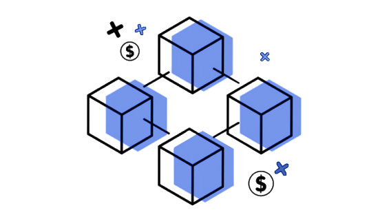

Блокчейн (Block — блок, chain — цепь) — это децентрализованная база данных, которая предназначена для хранения последовательных блоков с набором характеристик (версия, дата создания, информация о предыдущих действиях в сети). Аналоговым примером его структуры можно представить бесконечно длинный столбец таблицу, где нельзя убрать и изменить предыдущие строки.

Основное движение в такой системе происходит с помощью транзакций. Во время транзакции может выполняться какой-то скрипт, либо прописываться некая заметка с данными. То есть слово «транзакция» не равно денежному переводу и скорее обозначает способ обработки информации внутри сети.
Помимо основных данных, каждый блок имеет уникальный набор параметров: nonce (одноразовый номер), хеш предыдущего блока, хеш текущего блока и список транзакций.
Чтобы лучше понять, как устроены переводы внутри сети, снова представим страницу книги, где есть такая информация:
- Олег перевел Никите 100 долларов.
- Вася перевел Хуану 300 песо.
- Никита подтвердил пополнение счета на 100 долларов.
В пределах одного блока может храниться несколько тысяч таких записей. Когда память в блоке заканчивается — он закрывается, подписывается и переходит на новый блок в виде хеша или «отпечатка».
Хеш — это некий набор символов, несущий в себе уникальный отпечаток. Он формируется исходя из того, какие транзакции и в каком количестве хранит в себе каждый блок.
В процессе обработки транзакций постоянно проверяются хеши, после чего, словно по пирамиде, система поднимается к последнему хешу, где подтверждается целостность и верность всех предыдущих кодов, чтобы блок закрылся.
Если вдруг кому-то захочется добавить себе в кошелек пару сотен долларов без подтверждения со стороны остальных участников сети, то такая транзакция будет считаться неверной и перезапишется теми хешами, что хранятся у большинства узлов. То есть, если изменить хоть один байт, хоть одну точку, запятую или ноль, то итоговый хеш изменится, и блокчейну придется проверять все эти суммы заново для того, чтобы понять, правда это или ложь.
Из всего этого можно сделать вывод: сеть состоит из блоков, которые можно менять здесь и сейчас, пока они не закрылись. Все записывается в виде транзакций с информацией, которая шифруется как хеши и постоянно хранится в сети в каждом последующем блоке. Если изменить что-то и не найти этому подтверждение у большинства участников, то такие изменения просто не применятся, а блок будет считаться невалидным.
История создания блокчейна
Идея технологии blockchain была описана еще в 1991 году, когда ученые-исследователи Стюарт Хабер и У. Скотт Шторнетта внедрили вычислительно-практическое решение для цифровых документов с штампом времени, чтобы они не могли быть оформлены задним числом или подделаться.
Система использовала криптографически закрепленную цепочку блоков, для хранения документов с отметкой времени, а в 1992 году деревья Меркла были включены в разработку, что сделало её более эффективной, позволив собирать несколько документов в один блок. Однако эта технология не использовалась, и патент был упущен в 2004 году, за четыре года до создания Биткойна.
В 2004 году ученый в области компьютерных технологий и криптографический активист Хэл Финни (Гарольд Томас Финни II) представил систему под названием RPoW, Reusable Proof Of Work. Система работала, получив незаменяемый или невзаимозаменяемый Hashcash токен, основанный на proof of work и подписанный в RSA, который затем мог быть передан от человека к человеку.
RPoW решила проблему двойного расходования, сохранив право собственности на токены, зарегистрированные на доверенном сервере, который был разработан, чтобы позволить пользователям по всему миру проверить его правильность и целостность в режиме реального времени.
RPoW можно считать, как ранний прототип и значительный ранний шаг в истории криптовалюты.
В конце 2008 года white paper, представляющий децентрализованную одноранговую (P2P) систему электронных денежных средств, называемую Биткойн, криптография была разослана почтовой рассылкой, человеком или группой, с использованием псевдонима Сатоши Накамото.
Основывающийся на proof of work алгоритме Hashcash, но вместо использования аппаратной доверенной вычислительной функции, такой как RPoW, защита двойного расходования в Биткойне была обеспечена децентрализованным одноранговым (P2P) протоколом, для отслеживания и проверки транзакций. Короче говоря, Биткойны «добываются» за вознаграждение, используя механизм proof-of-work для индивидуальных майнеров, и затем проверяются децентрализованными узлами в сети.